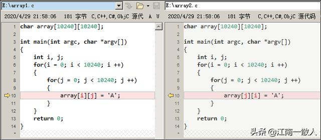
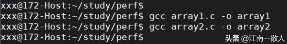
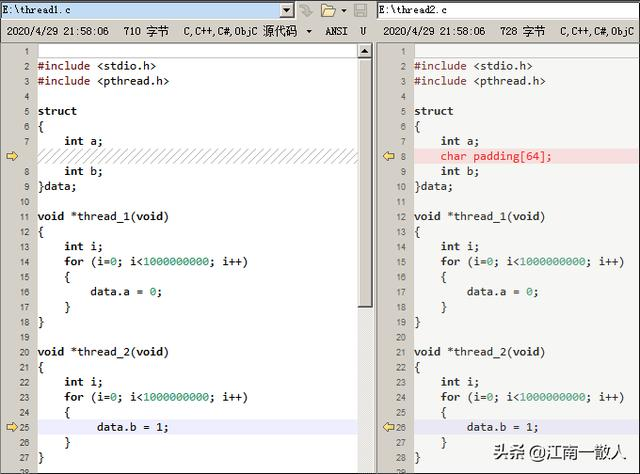
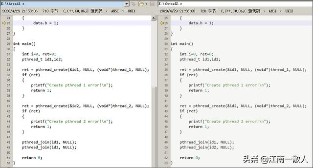
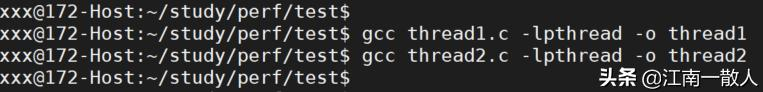
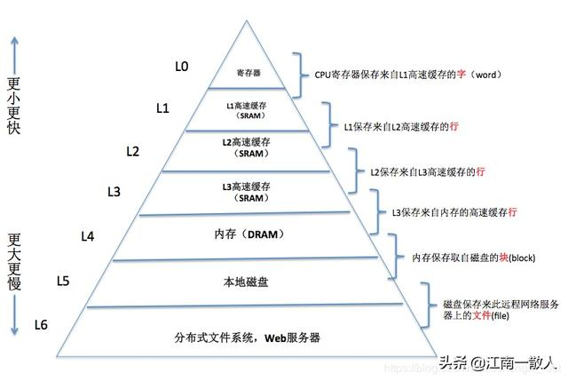

访问任意数组元素的性能相同？抛开Cache谈性能就是耍流氓
江南一散人 2020-04-29 23:55:30
引言
近日，网上看到一篇文章，分析数组访问的性能问题。文章经过一系列“有理有据”的论证之后，得出结论：访问数组的任意一个元素，性能上没有任何差异。
看到这里，顿时方了！
真的没有差异吗？还是用数据说话吧！
实例一 多维数组交换行列访问顺序
这是演示Cache对性能数据影响的很经典的例子：

array1.c 和 array2.c
两个程序只有一行差异：
- 第一个程序对数组按行进行访问
- 第二个程序对数组按列进行访问
测试环境
几个关键参数：
- OS：Ubuntu 19.04(Linux Kernel 5.0.0)
- CPU：Intel(R) Xeon(R) Gold 6130
- 主频：2.10GHz
- Cache 大小：22MB
- Cache line 大小：64 Bytes
具体参数看下图：

测试环境
编译
使用GCC编译，使用默认优化级别。如下图所示：

编译
运行
用time命令测量一下两个程序的性能差异。运行结果如下图：

运行结果
结果
从测试结果看，第一个程序运行花费0.265秒，第二个花费1.998秒。第二个程序消耗的时间居然是第一个程序的7.5倍！
这是为什么呢？当然是因为Cache！后面进行解释。
我们再来看一个多线程的例子。
实例二 多线程访问数据结构的不同字段
这个例子中，我们定义个全局结构体变量 data，然后创建两个线程，分别访问data的两个字段data.a和data.b。
两个程序的线程实现代码如下：

thread1.c(左) 和 thread2.c(右)
main()函数很简单，只是创建两个线程：

main()函数
两个例子中唯一的不同之处是：
- 第一个程序中，字段a和字段b是紧挨着的
- 第二个程序中，字段a和字段b中间有一个大小为64个字节的字符数组。
测试环境和第一个例子一样。
编译
创建线程使用到了pthread库，因此编译时需要加上 -lpthread。

编译
运行
同样使用time命令测量两个程序的执行时间，结果如下图所示：

执行结果
结果
从测试结果看，第一个程序消耗的时间是第二个程序的3倍！
这又是为什么？仍然是Cache！
在解释具体原因之前，先简单介绍一些关于计算机存储的基础知识。
存储金字塔
“存储金字塔”这个词，大家应该都不陌生吧，它指的是现代计算机系统的分级存储器体系结构。
简单来说，就是离CPU越近的存储器访问速度越快，但是生产成本越高，因此容量就越小。而离CPU越远的存储器访问越慢，但是成本越低，因此容量就越大。
它看起来就像一个金字塔一样，这就是“存储金字塔”这个词的由来。

存储金字塔
最顶端，离CPU最近的是寄存器，它的访问速度最快，容量也最小，现代的CPU一般最多只有几十个内置寄存器。
最底端，离CPU最远的是网络存储设备，既然要通过网络进行访问，可想而知，它的速度肯定是最慢的，但是容量却几乎不受限制。尤其随着近年来云计算的蓬勃发展，我们的很多数据都是存储在云端，分布在世界各地。
我们可以简单的认为，高一级的存储器是低一级存储器的缓存。也就是把低一级层存储器中最经常被访问的数据，存放在高一层的存储器中，因为它离CPU更近，访问速度更快。CPU每次访问数据时，首先在高一级存储器中查找，如果数据存在，就可以直接访问，否则需要到低一级的存储器中去查找。
这种金字塔式的存储结构之所以能够很好的工作，得益于计算机程序的局部性原理。
局部性原理
一个设计优良的计算机程序通常具有很好的局部性，包括时间局部性和空间局部性。
- 时间局部性：如果一个数据被访问过一次，那么很有可能它会在很短的时间内再次被访问。
- 空间局部性：如果一个数据被访问了，那么很有可能位于这个数据附近的其它数据也会很快被访问到。
一般来说，具有良好局部性的程序会比局部性较差的程序运行的更快，性能更好。
数组就是一种把局部性原理利用到极致的数据结构，后面会详细说明。
高速缓存存储器 - Cache
我们知道，程序在执行之前，必须要先加载到内存（DRAM主存储器）中，然后数据和指令才能被CPU访问。
但是，由于CPU和内存访问速度之间存在着几个数量级的巨大的差距，如果CPU每次都要从内存中去读取数据的，就会导致大量的计算资源闲置，这对现代CPU是不可接受的。
为了解决这个问题，在CPU和内存之间设计了高速缓存存储器，即Cache。
现代的CPU一般都有三级或者更多级的Cache，离CPU最近的是L1Cache（一级缓存），然后是L2 Cache、L3 Cache。L1 Cache的访问速度几乎和寄存器一样快，容量也最小， L3速度最慢，但容量最大。
这样一来，CPU在读取数据时，就会先逐级在Cache中查找，如果找到就直接从Cache读取，找不到则从内存中读取。
在Cache中找到所需的数据被称为命中（Cache hit），找不到则称为未命中（Cache miss）。
Cache miss的时候，CPU就不得不直接从内存中访问数据，会面临严重的性能惩罚。因此Cache miss率比较高的程序，性能会比较差。
Cache Line
Cache Line 可以理解为是 Cache和内存之间进行数据传输的最小单位。
很多现代CPU的Cache line大小是64个字节，我所用的测试环境Cache Line大小就是64个字节。也就是说每次数据在Cache和内存之间传输，并不是一个字节一个字节进行传输的，而是把整个Cache Line进行传输的。
比如下面这个数组：
int a[3][4] = {{1, 2, 3, 4}, {5, 6, 7, 8}, {9, 10, 11, 12}};
假设数组a的的起始地址在内存中是Cache Line对齐的（简单理解就是数组a的起始地址能被64整除），假如我们执行下面的代码：
int k = a[0][0];
在x86机器上，int是4个字节，在把a[0][0]赋值给k时，会把一个Cache line大小的数据从内存加载到Cache中，64/4 = 16个int，也就是说整个数组都被加载进了Cache中。如果接下来一条指令继续访问数组a的某个元素的话，就可以直接访问Cache的内容。
Cache 一致性
在多CPU的系统中，每个CPU都有自己的本地Cache。因此，同一个地址的数据，有可能在多个CPU的本地 Cache 里存在多份拷贝。
为了保证程序执行的正确性，就必须对于同一个变量，每个CPU看到的值都是一样的。也就是说，必须要保证每个CPU的本地Cache中能够如实反映内存中的真实数据。
假设一个变量在CPU0和CPU1的本地Cache中都有一份拷贝，当CPU0修改了这个变量时，就必须以某种方式通知CPU1，以便CPU1能够及时更新自己本地Cache中的拷贝，这样才能在两个CPU之间保持数据的同步。
注：现代CPU为了保证Cache一致性，都实现了非常复杂的Cache一致性协议，如MESI等。篇幅有限，这里不再赘述，以后会更新专门的文章进行讲解，有兴趣的童鞋不妨关注一下。
需要注意的是，CPU之间的这种同步，是有很大开销的。这其实也是案例二的主要原因，后面会进行说明。
了解存储金字塔和Cache的背景知识后，现在我们分析一下前面的两个案例。
案例一原因分析
案例一中，两个程序程序都是对一个同样大小的数组逐个元素进行赋值。唯一的区别是：
- 第一个程序对数组按行进行赋值
- 第二个程序对数组按列进行赋值
为什么性能差距竟有7倍之大呢？
我们知道，数组元素存储在地址连续的内存中，多维数组在内存中是按行进行存储的。
第一个程序按行访问某个元素时，该元素附近的一个Cache Line大小的元素都会被加载到Cache中，这样一来，在访问紧挨着的下一个元素时，就可以直接访问Cache中的数据，不需要再从内存中加载数据。也就是说，对数组按行进行访问时，具有更好的空间局部性， Cache命中率更高。
第二个程序按列访问某个元素时，虽然该元素附近的一个Cache Line大小的元素也会被加载进Cache中，但是程序接下来要访问的数据却不是紧挨着的那个元素，因此很有可能会再次产生Cache miss，而不得不从内存中加载数据。
而且，虽然Cache中会尽量保存最近访问过的数据，但由于Cache大小有限，当Cache被占满时，就不得不把一些数据给替换掉。这也是空间局部性差的程序更容易产生Cache miss的重要原因之一。
案例二原因分析
案例二中，两个程序都有两个线程，每个线程分别访问一个结构体变量的不同字段。唯一的区别是，
- 第一个程序中，字段a和字段b是紧挨着的。
- 第二个程序中，字段a和字段b中间有一个大小为64个字节的字符数组。
这其实涉及到Cache Line的伪共享（false sharing）问题。
Cache Line伪共享
所谓Cache Line 伪共享，是由于运行在不同CPU上的不同线程，同时修改处在同一个Cache Line上的数据引起的。
虽然在每个CPU看来，各自修改的是不同的变量，但是由于这些变量在内存中彼此紧挨着的，因此它们处于同一个Cache Line上。一个CPU修改这个Cache Line之后，为了保证Cache数据的一致性，必然导致另一个CPU的本地Cache内容的无效，因而触发Cache miss。
多个线程频繁的修改处于同一个Cache Line的数据，会导致大量的Cache miss，因而造成性能大幅下降。
原因分析
第一个程序中，字段a和字段b是紧挨着的，处于同一个Cache Line上，因此，两个线程同时修改这两个字段时，触发Cache Line伪共享问题，造成频繁的Cache miss，性能很差。
第二个程序中，字段a和字段b中间添加了一个64字节的数组，这样就保证了这两个字段处在不同的Cache Line上。如此一来，两个线程即便同时修改这两个字段，相互之间也互不影响，因此性能会比较好。
结语
除了上述的两个案例之外，其实，在系统中CPU Cache对性能的影响随处可见。
尤其在操作系统内核关键代码中，对CPU Cache更要是特别注意。比如，Linux 内核在进行进程调度和负载均衡时，CPU Cache是其着重考量的一个因素之一，我在《CPU负载真的是在任何情况下都越均衡越好吗？》一文中对其进行了介绍，有兴趣的童鞋不妨去看下。